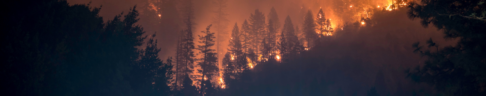
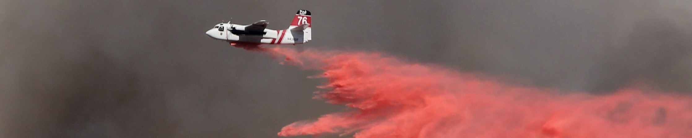
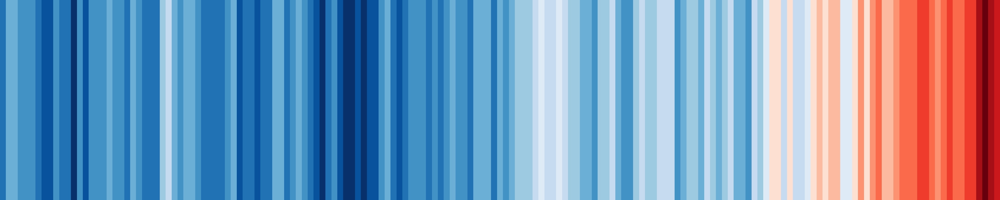
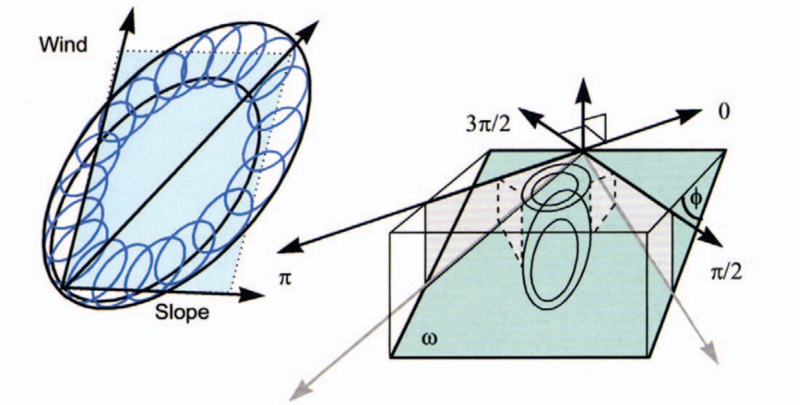

Resources
Check out the following resources to learn more about wildfires, protecting your home, climate change, and the science behind our simulation.

Wildfires
- Ready.Gov: Government source for wildfire preparation information.
- USFS: Wildfire basics curated by the U.S. Forest Service.
- CDC: Health risks of wildfires curated by the U.S. Centers for Disease Control.
- III: Facts and statistics about wildfires in the United States.
- CalFire: Information about wildfires and wildfire suppression efforts in California.

Protecting Your Home
- Fire Safe Santa Clara: Information for wildfire preparation and prevention curated by Santa Clara County locals.
- Fire Safe San Mateo: Information for wildfire preparation and prevention curated by San Mateo County locals.
- Fire Safe Santa Cruz: Information for wildfire preparation and prevention curated by Santa Cruz County locals.
- Fire Safe Marin: Information for wildfire preparation and prevention curated by Marin County locals.
- NFPA: Tips for protecting your home against wildfires curated by the National Fire Protection Association.

Climate Change
- NASA: Hub tracking key climate change statistics and trends.
- IPCC: United Nations Intergovernmental Panel on Climate Change supporting research and policy.
- C2ES: How climate change affects wildfires in the Western U.S.
- EPA: Wildfire trends as an indicator of climate change.
- BBC: The scientific connection between wildfires and climate change.

Simulation Science
- FARSITE: Original scientific paper proposing the FARSITE model used in our simulator.
- Rothermel: Basic model for wildfire spread employed by FARSITE.
{% endblock %}